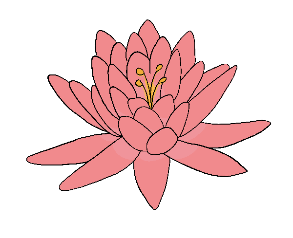

Naiá era uma bela índia que ignorava toda a atenção que recebia, pondo todo o seu amor na Lua, a deusa Jaci. Guardiã da noite, a Lua amava as jovens garotas da terra, escolhendo meninas durante a noite para virarem estrelas e dançarem para sempre com ela no céu. Não havia nada que Naiá quisesse mais do que ser escolhida pela sua deusa. Todas as noites ela ficava desperta, andando pela floresta esperando sua vez. Esse desejo se tornou uma obsessão e em pouco tempo Naiá estava perdendo sua força. Certa noite, em seu passeio noturno, Naiá percebeu a Lua mais próxima do que nunca. Acreditando que finalmente seria sua vez de dançar com a Lua, Naiá se jogou em sua direção. Quando a água bateu em seu rosto, Naiá percebeu que na verdade o que ela estava vendo era o reflexo da Lua na água, e fraca demais para nadar, ela afundou. Vendo a dedicação da índia em se juntar a ela e comovida pela sua morte, a deusa Jaci a transforma em uma flor,a Vitória-Régia. Passando o dia fechada, durante a noite a flor se abre, podendo então dançar com a deusa Lua quando ela se reflete na água à sua volta.